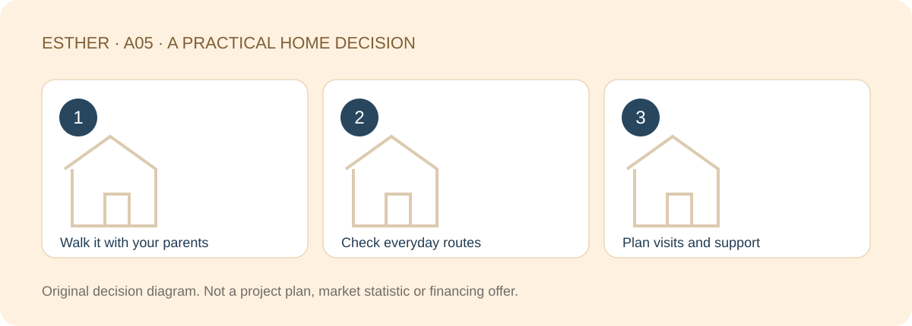

A HOME THAT FITS YOUR LIFE
Buying a Johor Bahru Home for Your Parents While Working in Singapore
Sources checked：2026-10-26 · By Esther, Real Estate Negotiator

Direct answer
Start with how your parents want to live, then check whether the home supports it. The complete route into the home, everyday errands, access to their healthcare providers, management and family visits matter more than a layout chosen on their behalf. No single home type suits every parent.
Browse article sections
Walk through the routine with them
Ask about shopping, friends, outings and how they prefer to travel. What can they comfortably do independently, and what would require help? An attractive home can still disrupt the routines that make daily life enjoyable.
Where viewing is permitted, trace the route from getting out of the car to the entrance, lift, corridor, bedroom and bathroom. Notice steps, thresholds, lighting, surfaces and turns. Having a lift is only one part of an accessible journey.

Turn “convenient” into specific checks
| Routine | Test together | Confirm separately |
|---|---|---|
| Arriving home | Shelter, access control, steps and rest points | Actual parking and entry arrangements |
| Moving indoors | Bedroom, bathroom and kitchen routes | Alteration options and restrictions |
| Daily errands | Transport they actually use | Crossings, walking conditions and opening arrangements |
| Healthcare and support | Usual providers and contact plan | Services offered and the real route |
Official Universal Design guidance offers inclusive-access principles, not proof that a named home complies with a standard. Where mobility or health needs require it, involve suitable professionals in the assessment. This is a housing discussion, not a medical recommendation.
Compare the upkeep that comes with each home type
For a condo, look at lifts, access, visitors, common areas and repair follow-up. Lower density does not automatically mean quiet, accessible or easy to maintain. For a landed home, consider stairs, external surfaces, roof care and who will organise repairs.
A practical living area on one level may matter more than spare bedrooms. If family often stays over, include privacy and bathroom use. Let your parents’ preferences guide the comparison rather than assigning them a home type based on age alone.

Plan who can help while you work in Singapore
With your parents’ agreement, discuss spare keys, maintenance contacts, visits and a clear contact sequence for unexpected situations. Security and building management are not personal care services and cannot replace appropriate family or professional support.
Assess visits using your actual workplace, transport and changing border conditions. A JB address alone does not make every trip easy. This article promises no hospital arrival time, emergency response time or fixed cross-border travel duration.
Let your parents reject an uncomfortable fit
If you prefer the view but they dislike the height, ask why. If they value familiar shops and friends, include the cost of changing those routines. Make two lists together: what they welcome changing and what they want to preserve. The most suitable answer may not be the newest or most expensive home.
Create a parent-centred shortlist brief
- Three routines your parents want to preserve.
- Access or indoor-use conditions they cannot accept.
- Who covers ongoing costs and organises maintenance.
- Questions still open after they have considered the home.
This guide addresses Malaysian buyers, including Malaysians working in Singapore. Working in Singapore is separate from citizenship. Singapore citizens and mixed-nationality purchases need their own Johor eligibility checks with a solicitor before applying the housing discussion.

Frequently asked questions
Is a low floor always better for parents?
No. Assess actual access, noise, privacy, lifts and contingency arrangements with your parents.
Does a lift make a home accessible?
Not by itself. Check the complete route, including steps, thresholds, surfaces and indoor movement.
Does security replace family support?
No. Housing security, repairs, personal care and emergency planning are different responsibilities.
Can I shortlist before my parents visit JB?
Yes, but involve them in the important routines and confirm actual usability rather than deciding everything for them.
Compare homes around your parents’ daily life
Share the part of your home search you want to clarify, your budget range and a suitable time to chat. A viewing or appointment is confirmed only after arrangements are agreed.
Discuss my home search with EstherThe editable message identifies this guide. Nothing is sent until you choose to send it. No identity or financial documents are needed in an initial chat.Sources and scope
Checked：2026-10-26。Practical comparisons and checklists are original editorial guidance, not market statistics, a professional inspection or personalised legal, tax or financing advice. Project details and transaction-specific requirements need separate verification. Historical source dates do not establish a new policy announcement. No loan approval, rental, appreciation, search ranking or AI citation is guaranteed.